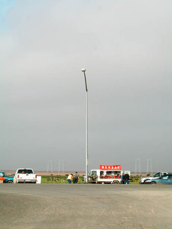

|
Transvergence artworks
|
|
Written by Administrator
|
|
Feb 07, 2006 at 05:29 AM |

I-5_Passing Project, ©Robbins, Jetztzeit Studios, 2001-08.
We live in the beginning of a “new” century in which the public
sphere in California has shrunk, been compressed, and themed to the
point of annihilation of any fixed point of authenticity. The current
institutionalized regional development of the I-5 Freeway - the
connective tissue between Los Angeles and San Francisco - is narrowing
the bandwidth of cultural programming, social interaction and
environmental concerns to that of lifestyle, market dynamics and
branding. The next paradigm of social space, just now emerging, is a
broadened spectrum ranging from the banal to the ecstatic – from
contested visions of suburban utopia to suburban dystopia.
We find ourselves now living in a “flat-space” where 20th century
notions of living have taken on wholly different and contested
meanings. Whereas “flat space” once evinced a topographical description
of the central valley, it now references an intensified agglomeration
of big box stores, highway infrastructure and parking lots in which
space is corporate, Tyvek wrapped and hyperefficient.
It is a space now teeming with powercenters, carcooning, dashboard dining and fastfood
clusters, which dot the edges of quaint 20th century towns and clusters along I-5.
The question soon becomes – where does one find oneself amidst the
multi-channel, hermetically sealed, and wired living fueled by such an
existence. This “ main street of California ” finds itself in a
cultural moment hinged on the precipice of an unprecedented and
dramatic upheaval. One could easily state that it is a moment which may
become unrecognizable in the next…. a moment from which the future has
been launched. This is a future that is strangely familiar but remains
a work-in-progress. It is a future which houses residents alien to
themselves – subjects on the run but stuck in traffic – seemingly going
nowhere in particular – but not quite standing still.
The strategy of the installation of I-5_Passing identifies fragile
signs of regional cultural signifiers and changes within the
environment and engages them as programmatic drivers. My aesthetic
inquiry posits questions such as what lies beyond and between our
collective overexposed, telematic imaginary? To me, there is little
progress being gained in the current efforts of re-purposing
re-theming, or refacading the topography.
This installation is a hybrid digital media and locative project
utilizing the intersections and commonalities of physical and virtual
spaces created along I-5. This installation consisting of projected
video and audio is more or less a reverie, a collaged flow of live
action video footage. This is viewed in tandem with seemingly
unconnected fragments generated from an animation of still images of
the iconic banal Food Marts dotting I-5. A custom-designed software
program renders a visualization of alternating data streams of
pollution levels such as Carbon Dioxide, NOX, Sulfur Dioxide, and
Ozone which generates this live animation. Sensors are placed
periodically along the corridor of I-5 itself and levels transmitted
wirelessly to the main server, which then serves as the primary
distribution point. These levels are detected and transmitted hourly.
In this landscape of extreme and rapid prototyping of (sub)urban
development there is no whole, as such. Each behavior appears to be in
aggressive competition or symbiotic relation to one another. I see
evolution through re-thinking – rethinking our relationship to the
swarming of hyperurbanism and psyco-geographic dynamics. The strategies
inherent in I-5 _Passing (re)imagines a public realm of “passing
“erupting out culture(s) of productive frictions … and fictions.
|
|
Last Updated ( Jul 15, 2008 at 05:12 PM )
|